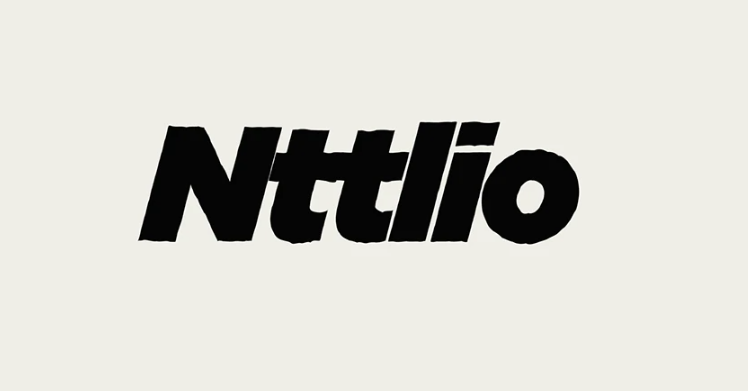
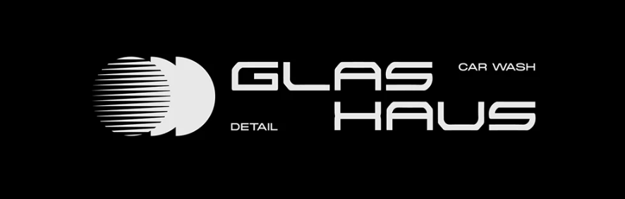
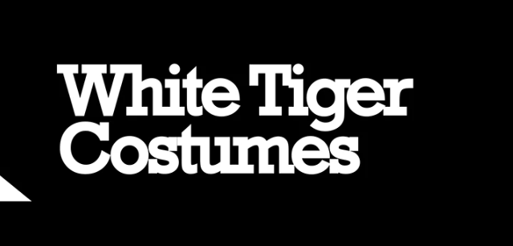
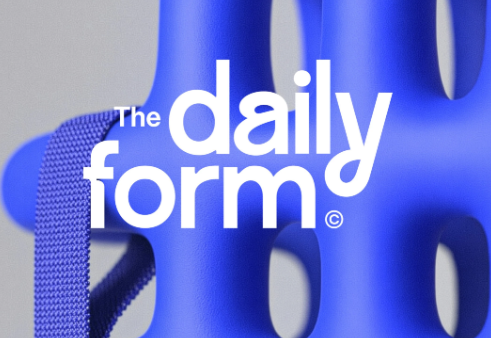
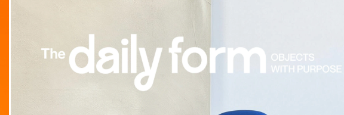
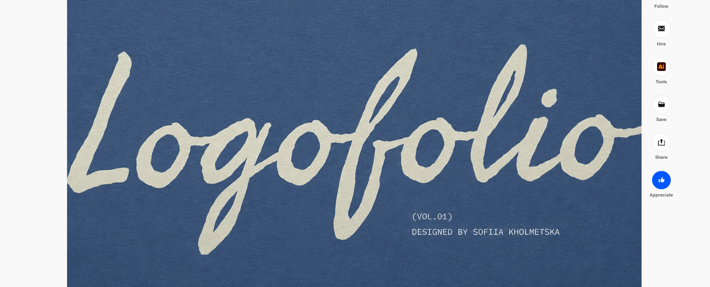
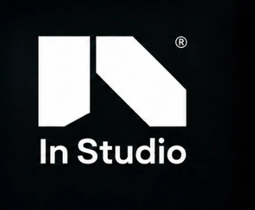

01 / Current
#ffffff · #e85832 · #ddd4c6 · #0a0a0a · #000000
After Hours Photo / 01
A flexible identity system for editorial event photography: high-contrast type, decisive color, and marks that feel made rather than assembled.
Primary / current site voice
After Hours
Photo
Arial, Helvetica, sans-serif
Direct, modern, readable.
Accent / editorial contrast
The moment
between moments.
Georgia, serif / italic
Use for emphasis, not body copy.
Thirteen starting palettes. Keep one ink, one paper, one signal color and one supporting neutral in rotation so the identity stays recognizable while the mood can move.
#ffffff · #e85832 · #ddd4c6 · #0a0a0a · #000000
#000000 · #181818 · #9a8a82 · #ebebeb · #f05b10
#161616 · #27434c · #000000 · #eb6927 · #ebebeb
#0f0f0f · #fbeede · #fc2e16 · #36020b · #000000
#0a0a0a · #010101 · #ff2d3d · #cdcdcd · #efefef
#ffedd1 · #073327 · #a3c18a · #ff8e00 · #1c140e
#ff391a · #491106 · #000000 · #ffffff
#ff3817 · #f7f7f7 · #1a1a1a · #0f0f0f
#fda2b1 · #ffb300 · #f0392e · #441f1d · #191919
#febe00 · #091cbe · #fe0000 · #ffffff · #050404
#070707 · #e6ddce · #c0a27c · #d6d6d6 · #181818
#faf0e6 · #dd000b · #f08cb5 · #1f3812
#e8e2dd · #d96d4b · #111111 · #078b9a · #f54012
Supplied references point toward bold, compact wordmarks, high-contrast editorial lettering, geometric symbols and confident single-color applications.






